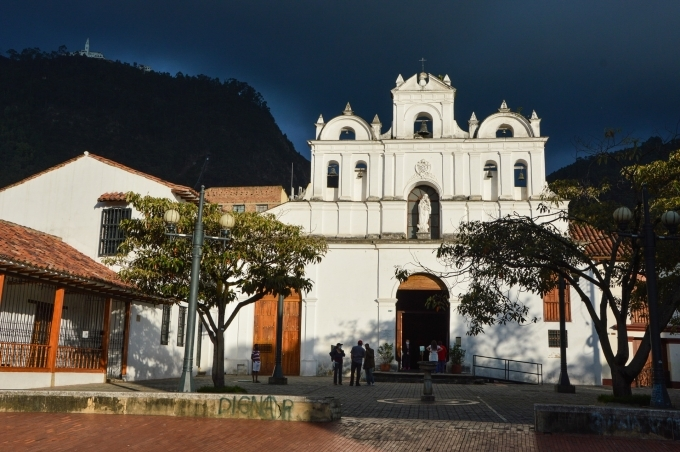

Parroquia Nuestra Señora de Las Aguas
Horarios misas
Lunes: 6 pm
De martes a viernes: 7 am · 12:30 pm · 6 pm
Sábado: 6 pm
Domingo: 8 am · 10 am · 12 m · 6 pm
Confesiones
Antes y después de Misa.
Durante las Misas cuando hay un sacerdote disponible.
También puede buscar a los sacerdotes a través del despacho.
Hora Santa
Todos los jueves de 5 pm a 6 pm.
Despacho parroquial
Horarios
De lunes a viernes:
9:00 am – 12:30 pm
1:30 pm – 5:00 pm

El templo de Nuestra Señora de Las Aguas
Video